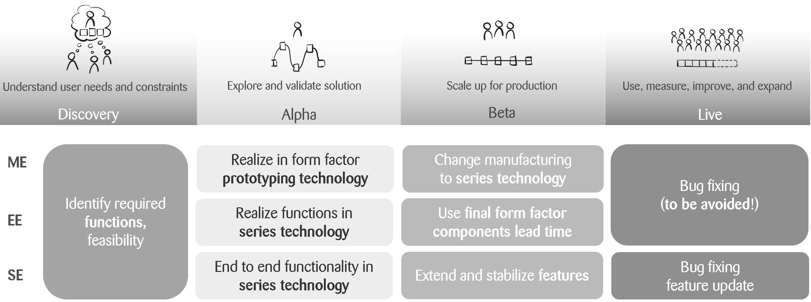
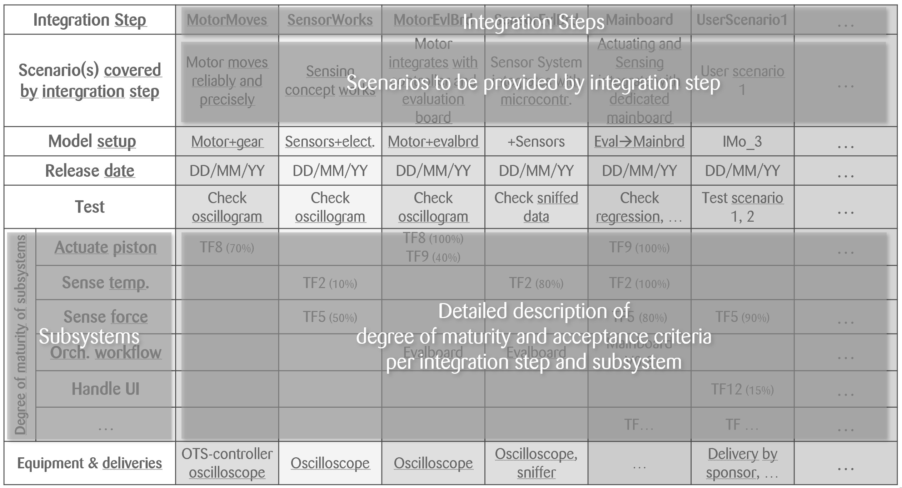

We are all engineers but work quite differently: software engineers, electronics engineers, mechanics engineers
What are your experiences with regard to interdisciplinary development of a product comprising software, electronics and mechanics? I would like to share the observations I have made about interdisciplinary system development!
It seems that developing within just one discipline (engineering software or electronics or mechanics) usually works quite well. But when these disciplines need to create one product together the challenges arise at the discipline boundaries: on the one hand, these boundaries (and, to be more precise, where these borders are defined concerning which function will be realized in which degree by which discipline) offer the opportunity for innovation! On the other hand, the most common root cause for project issues is ineffective communication at these borders!
Interdisciplinary projects require outstanding attention at discipline interfaces: primarily with regard to human communication!
But being aware of these boundaries is not enough. The working mode used by each discipline is just very different because the constrictions are very different. Some examples for a device development comprising software, electronics, mechanics are (see figure 1):
Mechanical components and assemblies usually start with the final form factor and will be detailed subsequently. Going from the concept phase (alpha) to series development (beta) usually means a change of manufacturing technology (e.g. from additive manufacturing to plastics injection moulding).
Electronic circuits are usually realized in or close to series technology even in concept phase (alpha). The final form factor is usually considered only at series development (beta).
Software usually provides end-to-end functionality at the concept phase (alpha), maybe even with mock ups. These existing features are extended and stabilized during the series development phase (beta).
 Figure 1: Comparison of main drivers per discipline during product development lifecycle
The next interesting cause of communication pitfalls are ambiguous terms! Are you sure you are talking the same language as your colleagues? Check out some terms that illustrate this problem (the term “HW” refers here to electrical and mechanical engineering):
“Iteration”
- HW: related to maturity, not cadence
- SW: cadence or repetition
- Proposal: use “sprint” instead of “iteration”
“Prototype”
- HW: typically a sample for verification (close to launch date of product)
- SW: e.g. UX-prototype, proof of concept, throwaway prototype (at the very beginning of development)
- Proposal: use a specific prototype like “verification prototype”, “UX-prototype”, “throwaway prototype”
“Design”
- HW, SW: aesthetic design
- HW, SW: construction, plan for building
“Increment”
- HW: typically an HW “increment” refers to the next level of maturity
- SW: by definition each increment takes one sprint
“Subsystem”
- HW: logical meaning (like description of structure)
- SW: logical or implementation unit
“Integration”
- Does this mean in the functional (HW, SW) or spatial (HW) sense?
- At component (HW, SW) or system level (HW, SW)?
Talking about communication also requires thinking about the different types of meetings and an effective culture: pay attention to whether the right people talk about the right topics, e.g.
Standup
- It is your responsibility to ensure that everyone attending understands the (high-level) information you are providing, including the limitations of your knowledge.
- Set the stage for your information: give a context (one or two sentences)
- Provide specific information about the context
- Explain possible consequences
- State what you are planning to do concerning this topic
- For explaining a discipline-specific term, it is helpful to have a term of the week slot after the standup. Make sure to also document the term in the project glossary.
Technical sync
- Use a regular technical sync, e.g. weekly, for planning the big picture and details of the integration strategy. Discuss topics affected by more than one discipline, make the unknown visible!
- Document and communicate your integration plan (e.g. by using the maturity table described below)
- Include in this planning also the use of rapid prototyping means (EE, ME) for early integrations and physical samples. These samples provide insights and value!
- Use a continuous integration environment for the system to ensure robust artefacts where the new unit is to be integrated
- Reconsider what has been learnt and the assumptions that have been made when making decisions
- Further opportunities to avoid conflicts during the project lifetime exist in identifying internal requirements such as
- Interfaces to bring up
- Development-driven interdisciplinary tasks
- Consideration of how interdisciplinary support for bug fixing might work
There is a central communication tool that addresses the needs mentioned above: we call it “maturity table”. This tool is a simple, but very effective, table describing the integration strategy with its steps and associated samples. It develops during the project lifetime and needs to be updated regularly. Typically, each insight to be generated (or realized device sample) is described by one column, each subsystem in one row with its required functionality and maturity (figure 2).
 Figure 2: Maturity table as a central communication tool describing each integration sample (simplified example)
This table is very valuable for discussions between the project team and the sponsor as well. Based on functions and subsystems, it allows you to trigger the necessary discussions to avoid surprises during device development. My three most important takeaways for you are:
The more disciplines are affected by a system, the more sprints are necessary to generate a common understanding of the system and the neighbouring discipline. Usually this is mission-critical.
Use a systematic approach to ensure the right people are talking about the right topics (e.g. an adapted meeting culture and the maturity table).
Don’t assume anything, especially about other disciplines – just talk!
By Thomas Weber